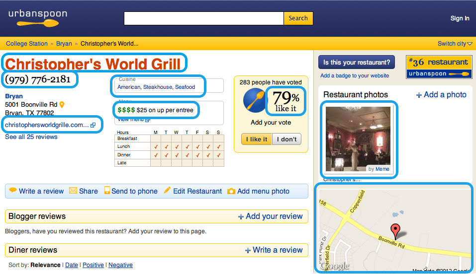

For the tutorials we will create a meta_metadata object for the site UrbanSpoon.
There are many different types of information pages on UrbanSpoon. When writing meta-metadata for a site it's best practice to start with the lowest level of information page and then work up. For that reason this object will be specifically for a UrbanSpoon restaurant information page.
The first step is to create a new XML file for your meta-metadata definitions and place it in the mmdrepository/repositorySources package in the MetaMetadataRepository project. Alternatively, you can add your definitions to an existing file in that folder if one already exists for your information source. You will need to define a meta_metadata_repository tag as the root element of the new XML file.
NOTE: You may need to delete mmdrepository/powerUser/urbanSpoon.xml and mmdrepository/repositorySources/restaurant.xml to prevent some conflicts. After getting through the tutorials, you can use SVN to revert local changes to get them back.
The tag must have the following attributes:
- name -The name of the repository.
- package - The default package to place classes generated by the MetadataCompiler using this meta-metadata.
<meta_metadata_repository name="urban_spoon" package="ecologylab.semantics.generated.library.tutorial.urbanspoon" >
</meta_metadata_repository>
Next, you will need to create a meta_metadata object. All other tags for this object will be nested inside this.
The tag must have the following attributes:
</meta_metadata_repository>
- name - A unique name for the object.
- parser - The type of data parser to be used, either "direct" or "xpath". Use "direct" for sources represented by XML that can map directly to metadata, and "xpath" for HTML documents that need xpath expressions for extraction of metadata.
- extends - A meta_metadata object which this one will extend, thus inheriting all of its fields and also allowing for more to be added.
- comment - A helpful comment to increase readability.
<meta_metadata name="restaurant" extends="compound_document" comment="The restaurant class" >
</meta_metadata>
</meta_metadata>
- name="restaurant" - A unique (within the meta_metadata_repository) and informative name.
- extends="compound_document" - This extends the built-in compound_document meta_metadata type (which has the most basic fields such as title, description, etc.) to inherit its fields since this object will have some overlap.
Because this is the generic restaurant class the parser attribute is excluded -- different sources may use different extraction methods. It will be added later when we create a meta_metadata object specific to UrbanSpoon. Now that the object is defined, we will create some information fields. These fields will be things like the name of the restaurant, its user rating, an image of the restaurant, etc. Fields are defined using one of three tags:
- scalar for scalar fields, such as strings, integers, or URLs
- composite for fields that contain an object with multiple fields
- collection for fields containing multiple meta_metadata objects
The attributes needed for each field type are described below:
for scalar:
- name - A unique (within the object) name for the field.
- scalar_type - The type of the data, either String, ParsedURL or Int.
- xpath - An XPath expression to the desired information.
- comment - A helpful comment.
for composite:
- name - A unique (within the object) name for the field.
- type - The type of the data object.
- xpath - An XPath expression to the desired information.
- comment - A helpful comment.
for collection:
- name - A unique (within the object) name for the field.
- child_type - The type of data contained within the collection
- xpath - An XPath expression to the desired information.
- comment - A helpful comment.
To decide which information fields we want to gather let's take a look at the restaurant page and see what is available and what we think could be useful. (As a rule it is always better to get the information even if you are not sure if it will be needed.)

I have boxed in blue the information which I think would be good to have:
- Restaurant name
- Phone number
- Website
- A picture of the restaurant
- Rating
- Price of an average entree
- List of food genres
- A map showing the restaurant's location
<meta_metadata_repository name="urban_spoon" package="ecologylab.semantics.generated.library.tutorial.urbanspoon" >
<meta_metadata name="restaurant" extends="compound_document" comment="The restaurant class" >
<scalar name="phone" scalar_type="String" comment="Phone number of the restaurant" />
<scalar name="pic" scalar_type="ParsedURL" hide="true" comment="A picture from the restaurant" />
<scalar name="link" scalar_type="ParsedURL" comment="Link to the restaurant's website" />
<scalar name="rating" scalar_type="String" comment="Rating of the restaurant" />
<scalar name="price_range" scalar_type="String" comment="Price range of the restaurant" />
<scalar name="map" scalar_type="ParsedURL" hide="true" comment="Map image of the restaurant's location or link to a directions page" />
<collection name="genres" child_type="document" generate_class="false" comment="The genres of food offered" />
</meta_metadata>
</meta_metadata_repository>
Some key things to observe from this class:
<meta_metadata name="restaurant" extends="compound_document" comment="The restaurant class" >
<scalar name="phone" scalar_type="String" comment="Phone number of the restaurant" />
<scalar name="pic" scalar_type="ParsedURL" hide="true" comment="A picture from the restaurant" />
<scalar name="link" scalar_type="ParsedURL" comment="Link to the restaurant's website" />
<scalar name="rating" scalar_type="String" comment="Rating of the restaurant" />
<scalar name="price_range" scalar_type="String" comment="Price range of the restaurant" />
<scalar name="map" scalar_type="ParsedURL" hide="true" comment="Map image of the restaurant's location or link to a directions page" />
<collection name="genres" child_type="document" generate_class="false" comment="The genres of food offered" />
</meta_metadata_repository>
- The meta_metadata element is placed within the meta_metadata_respository element
- the restaurant name is missing, that information will use the title field inherited from the compound_document class.
- phone, rating, price_range are of scalar_type String.
- pic, link, and map are of type ParsedURL, this is because these will be the actual URLs to an image or website.
- pic and map have the attribute hide = false, because the URLs of these images don't need to be displayed to the user.
- genres is a collection, meaning it will hold a list of objects of type search result. This is accommodate restaurants with many food genres.
Note: To use your newly defined meta_metadata in an application, you may need to compile it into source codes with MetaMetadata Compiler.
The compiler is in the package ecologylab.semantics.compiler in project simplTranslators (see environment setup).
With Eclipse, launch files named as CompileMmdTo*.launch (where * is your target language name) are available in that project for you to run the compiler conveniently.
With Eclipse, launch files named as CompileMmdTo*.launch (where * is your target language name) are available in that project for you to run the compiler conveniently.
Hopefully now you have learned how a data structure is defined for a meta_metadata object.
The next tutorial will cover information extraction.